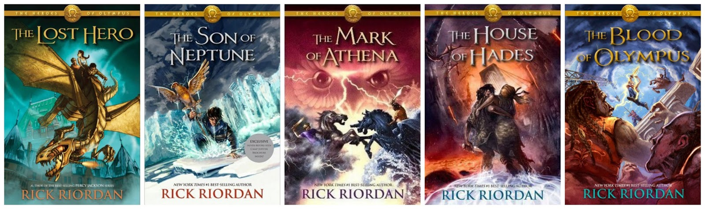
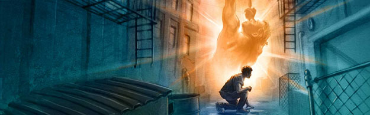

Dive into the World of Rick Riordan's Greek Mythology Series
Meet Percy Jackson:
The Hero of a Generation
At the heart of the series is Percy Jackson, a twelve-year-old boy who discovers he is the son of Poseidon. As he navigates the trials of being a demigod, Percy embarks on epic quests to prevent catastrophic disasters in the mortal and divine realms. With his friends Annabeth Chase, daughter of Athena, and Grover Underwood, a satyr, Percy faces gods, monsters, and treachery, all while dealing with typical teenage woes.
The Series Breakdown
-

-
Percy Jackson & The Olympians
- The Lightning Thief: Percy Jackson discovers he’s a demigod, the son of Poseidon. After being accused of stealing Zeus's lightning bolt, he embarks on a quest across the U.S. with friends Annabeth and Grover to find the true thief and prevent a war among the gods.
- The Sea of Monsters: Percy returns to Camp Half-Blood only to find it in danger. The magical barrier protecting the camp is weakening. He and his friends venture into the Sea of Monsters (the Bermuda Triangle) to find the mythical Golden Fleece that can save the camp.
- The Titan's Curse: Percy and his friends embark on a mission to rescue the goddess Artemis and his friend Annabeth, who have been captured by the Titan Atlas. They face various challenges and encounter new allies, including the fierce hunter, Zoe Nightshade.
- The Battle of the Labyrinth: As the demigods prepare for war against the Titan Kronos, Percy navigates the Labyrinth, a magical maze that holds dangers and secrets. He must find a way to stop Kronos's army from invading Camp Half-Blood.
- The Last Olympian: The final battle looms as Kronos and his forces attack Manhattan. Percy and his friends rally demigods and mortals to defend Olympus. With the fate of the world hanging in the balance, Percy must embrace his identity and make a crucial decision to protect the gods.
- 
-
The Heroes Of Olympus
- The Lost Hero: Jason, Piper, and Leo embark on a quest to rescue Hera from the giant Porphyrion, with Jason struggling to regain his lost memories. As they face various challenges, they uncover a looming threat to both Greek and Roman demigods.
- The Son of Neptune: Percy Jackson wakes at Camp Jupiter with no memories and teams up with Hazel and Frank to free the goddess of death, Thanatos, from the giant Alcyoneus. Their journey highlights the connection between Greek and Roman mythology while testing their abilities and friendships.
- The Mark of Athena: Annabeth, Jason, and their friends on the Argo II seek the Athena Parthenos in Rome to prevent Gaea’s awakening. Throughout their quest, Annabeth confronts her own fears, and the group learns the power of teamwork and unity.
- The House of Hades: To close the Doors of Death, Percy and Annabeth navigate the perilous Underworld while their friends battle to keep Gaea's forces at bay. Their journey is fraught with danger and tests their bonds of friendship and loyalty.
- The Blood of Olympus: The seven demigods unite for a final battle against Gaea, facing personal challenges and embracing their destinies. Their efforts culminate in restoring balance between the Greek and Roman worlds, leading to a hopeful resolution for both camps.
- 
-
The Trials Of Apollo
- The Hidden Oracle: After being turned into a mortal, Apollo, now known as Lester Papadopoulos, must reclaim his place on Mount Olympus. With the help of demigods Meg and Leo, he embarks on a quest to find the Oracle of Delphi and confront a dark force threatening the future.
- The Dark Prophecy: Apollo, Meg, and Leo travel to Indianapolis to rescue the Oracle of Trophonius and prevent the Triumvirate from gaining power. Along the way, they encounter new allies and old foes, testing their courage and forging deeper friendships.
- The Burning Maze: Apollo and his friends venture into the Labyrinth to rescue a captured Oracle while facing the deadly challenge of the evil emperor Commodus. As they navigate the maze, they confront their fears and learn valuable lessons about sacrifice and teamwork.
- The Tyrant's Tomb: The group journeys to the ancient city of San Francisco to save the Oracle of the Tyrant and confront Commodus once more. Apollo grapples with his past while his friends face personal trials, leading to a climactic battle that could change everything.
- The Final Trial: In the series conclusion, Apollo and his friends prepare for a final showdown against the Triumvirate to save the Oracles and prevent chaos. The story culminates in significant sacrifices and the restoration of Apollo’s identity, bringing closure to their epic journey.
Themes That Resonate
Riordan’s books tackle universal themes such as friendship, loyalty, and self-discovery. Each character’s journey is relatable, mirroring the struggles of growing up while exploring rich mythological narratives. The humor woven throughout the series adds a light-hearted touch, making these stories both entertaining and educational.
Why Read?
-
Engaging Storytelling: Riordan’s writing style captivates young readers, blending humor with suspenseful action.
-
Educational Value: The series introduces readers to Greek mythology in a fun and accessible way, sparking interest in ancient history and literature.
-
Diverse Characters: The stories feature a diverse cast, showcasing various cultures and backgrounds, allowing all readers to see themselves in the narrative.
Join The Adventure!
For fans eager to dive deeper into the world of Percy Jackson and his friends, visit our resources section for quizzes, character profiles, and discussion guides. Join the community of readers who share your passion for mythology and adventure!